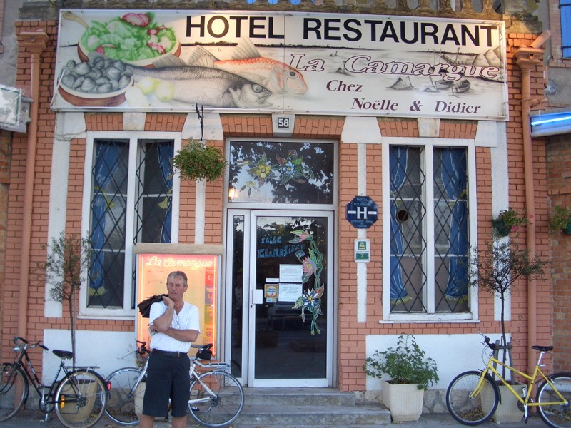

晚上十一點剛過，在街頭上網完畢散步回旅館，看到一樓大廳擺了四∼五個水桶。
水不知道是打哪邊挑來的，上面或多或少都飄浮著迷樣的物質。
『請問還是沒有水可以用嗎？』
『是呀，真抱歉，大概午夜左右可以恢復供水。』
『大概？』
『誰都沒辦法確定。』
相當無奈的回到房間，想洗臉不行，想洗澡不行、想洗腳也不行、刷牙也沒辦法。
身邊唯一的液體物質是兩公升的柳橙汁，一點忙也幫不上。
硬著頭皮拿毛巾到樓下沾溼，把臉跟身體簡單擦過，就當是洗好澡了。
拜託別再晃點我了，多晚都沒關係，趕快恢復供水吧 /_\
睡覺的時候老覺得身體癢癢的，睡的不是很好。
睡前把房間沒半點作用的水龍頭轉開一些，如果水來了，聽到聲音就可以下床作盥洗。
迷迷糊糊之間好像聽到有水來了，整棟旅館（今晚客滿）都在歡呼，大家排隊去浴室盥洗。
好棒呀！水終於來了！結果只是夢......
一整晚水龍頭都靜悄悄的，沒半點動靜，等水等到睡不好覺，無奈的失眠。
早上睡超過九點，下床發現一直打噴嚏外加流鼻水兼喉嚨痛。
慘了，昨天吃太多冰淇淋，今天就感冒了。
好加在頭不會痛，那就沒什麼關係，老是因為小感冒而吃藥的話，自身的抵抗力都會衰弱。
就讓它自己好吧，過一天還是好不了的話，再做打算。
一大清早的，沒事玩OnyX這套軟體，把iBook給搞掛了。
重新開機就跑到終端機畫面底下，連OSX都進不了，聽說OSX是以UNIX為基礎。
問題是UNIX我完全不懂，DOS到還會一些些，完蛋了，沒有電腦可以用了 ~"~
重開機N次都是一樣的結果，只好祭出密技『Command+Option+R+P』，這招再不行就沒輒了。
又下樓去沾溼毛巾，把臉擦一擦，照鏡子看起來覺得自己跟鬼一樣，臉色不好，氣血失調。
十點多離開旅館，把包包固定回車架的這段時間，觀察到除了我之外的其他房客，表情都很不爽。
店員只要看到退房的人，都是不斷的陪笑臉，表示歉意，說他們也無能為力，是施工的問題。
雖然有住過熱水不熱的旅館，或是沒有熱水的旅館，但沒水可用的旅館則是第一遭。
很想跟他們討部份房租的退費，但不知道該怎麼開口，自認倒楣吧，出發時，連水壺都是空的，哎∼
看看地圖，沿海的路有些難走，沒有腳踏車的生存空間，決定走N113往尼姆（NIMES）的方向前進。
大城市都很容易迷路，在這邊晃了好久才找到路。
說來抱歉，可是蒙貝利耶真是各被狗屎覆蓋的城市，到處都是狗大便，而且完全沒有人有清理的打算跟念頭。
很多狗大便已經變成化石類的物體，依舊存在那邊屹立不搖，再加上新的狗大便。
彷彿把全法國的狗大便都集中到這個城市一樣，比台北市還要誇張數十倍。
因為在法國的其他地方很難看到狗大便這種東西，一口氣出現這麼多還真是不習慣，當地人倒是習以為常。
地大物博，什麼東西都種的出來的法國，似乎有一樣水果一直都沒有發現。
來了40天，沒看到有水果攤在賣水梨，難道是季節不對嗎？
到法國吃過了蘋果、柳橙、葡萄柚、香蕉、草莓、奇異果、水蜜桃、李子、杏桃、葡萄、番茄、哈蜜瓜、檸檬。
就是沒吃過梨子，所以，有點想念梨，等我回去呀∼ :)
法國沒有台灣特有的梨。
法國卻有台灣沒有的梨。
經過幾次的比手畫腳，發現比手語的方式依照國情的不同，不見得是通用的。
比如說要你比『吃飯』的手勢，大多都是左手假裝端著一個碗，右手假裝拿著一雙筷子，然後往嘴裡扒飯。
這個動作，就算你比的再怎麼傳神，法國人還是看不懂，因為他們吃飯不用碗筷。
法國人比吃飯的手語，是用右手拿著麵包往嘴裡塞，嘴巴還要咬兩下。
很實用的動作唷∼不會說法語的話，學起來絕對不會錯的。
由於旅行支票兌換不方便，這陣子都是用刷卡的方式來付帳，絕不輕易掏出現金。
如今，包包裡還有1500歐元的旅支（約台幣六萬），但全身上下的現金卻不超過10歐元。
不知道自己是算窮還是算有錢 /_\ 反正能刷卡就能活的下去，慢慢找地方換旅支吧。
只要看到小女生在當送信的郵差，心情就會很好 :D
台灣也可以效仿一下呀，會讓城市增加青春氣息呢∼
費了一番工夫，總算找到施工中的N113，不知道在施什麼工程，幸好沒有把整條路給封起來。
剛走出蒙貝利耶，就先去可以洗把臉，裝瓶水的地方吃午餐。
由於下過毒誓，絕對不到麥當勞吃東西，所以就去法國的『Quick』，法國版的速食店。
吃飯前，拎著盥洗用具去廁所好好的洗臉刷牙一番，總算精神多了∼
點了一號餐，漢堡+薯條+可樂，6.35歐元，再加0.6歐元把可樂跟薯條加大。
（在台灣只要加5元就可以了，在法國要加24元呀 >"<）
味道還很讚唷，雖然只是連鎖速食店，但挺值得推薦的。
新買的車架，感覺比舊的那個還要秀氣許多，只要車身稍微震動一下，就會發出『吱吱∼』的悲鳴。
察看一下情況，居然已經出現細微的裂痕，如果不能想點什麼辦法的話，隨時斷掉罷工都不會令我感到意外。
只是這次斷掉的地方是旋轉螺絲的地方，快拆式的比較不耐用呀，得想點什麼辦法才行。
因為沒有可以丟棄的行李，所以想去買一個背包，把部份偏重的物品，如iBook，拿來自己背。
貨架再斷一次的話，我一定會凋零在路邊的.............
不靠海騎車的今天，延續昨日的風骨，依舊打赤膊騎了半天的車，反正沒人認識我，管它誰是誰來著。
而且打赤膊騎車，相當意外的，加油聲居然比較熱烈？後遺症就是背後晒傷了，洗澡時又癢又刺痛。
平衡一下也好，兩隻手都已經脫了不下三次皮，身體也該晒一下。
五個牌子有四個跟高速公路有關，有點像又誤闖了高速公路對吧？
雖然有點擔心，但沒看到禁行腳踏車的牌子，那就勇敢的騎吧，別顧慮那麼多。
下午三點，路過尼姆，對這城市一點印象都沒有，只是單純的路過，唯一做的一件事，就是在加油站買了一瓶可樂。
研究了一下相當要命的地圖，（說是地圖，其實快變成拼圖了，目前已經從一大張分裂成三小張，還在持續分裂中。）
從尼姆要往海岸線走，怎麼都是高速公路的天下，不論是到馬賽還是土倫，甚至遠一點的尼斯，都很難鑽呀。
有點頭痛的邊喝可樂邊想接下來該怎麼走比較好，海岸線的路怎麼這麼不親切呀。
走了半天的N113，出現令人興奮的『馬賽（MARSEILLE）』標示時，拋棄了我。
雙重禁止令，『汽車專用道』+『禁行腳踏車』。
剛剛看地圖的時候早就知道會是這樣的狀況，但依舊很失望，沒辦法前進了，頭痛 /_\
現在只能賭有那種小到沒有出現在地圖上標記的小路可以讓我走，事實上我常常就跑到沒出現在地圖上的小路裡頭。
所以這樣的小路的確是存在的，只希望我需要它的時候，它能適時的出現，不然接下來就動彈不得了。
走旁邊的D570再轉D36，往南邊走，萬一沒有出現國王的小路，結局就是過兩天，我會依原路騎回現在的地方。
D36騎起來好累好累，逆風吹呀吹，越騎越慢腳就越酸，惡性循環。
全世界的蟬，到了夏天都很拼命的叫著。
這棵長滿松果的樹上也藏著看不見的蟬。
翅膀雲，你又出現了，幫我飛一段路好嗎？
逆著風，騎了將近40公里，到一個叫『SALIN DE GIRAUD』這是地圖上有標示道路能走到城市的極限。
接著就是要走隱藏的道路，有沒有的走還不知道，把這個打擊留給明天，今天就到此為止，找地方過夜吧。
蠻漂亮的旅館，30歐元的價格，住的挺高級的，房間裡面有壁爐，居然也有冷氣機？

旅館的旁邊也開了一家餐廳可以吃飯，慶祝到法國的第四十天，今天吃好一點。
相當艱辛的點了菜，跟服務生比手畫腳，他努力的用英文講解了，還是有聽沒有懂。
好吧，不勉強裝內行，這時候就請他推薦他認為好吃的就好了。
總之點了17.5歐元的套餐（店裡的東西挺貴的 = ="），菜色如下：
Tellines de Beauduc
聽他說應該是貝殼類的食物，他說這個很好吃。有點怕會不會是生蠔？ /_\
端出了ㄧ大盤的小貝類，超好吃！味道很清淡，調味的恰到好處，沒有海鮮的腥味，吃再多也不膩。
但是相當麻煩吃，自認吃東西很快的我，也花了超過半小時才吃完這一盤。
Soupe de Poissons "Maison"（croutons、rouille、fromage rape）
沒有魚的魚湯
先送上乳酪絲、法國麵包、比上次還多了大蒜跟沾醬。
吃法相當講究，照服務生的教法，先用生的大蒜在法國麵包上摩擦，變成大蒜麵包。
然後抹上黃色的醬料（蛋黃醬？）再撒上乳酪絲，這樣就完成了一個。
製作多個放到盤子裡面，再淋上鮮美又熱騰騰的魚湯。
嘩啦∼完成啦。
乳酪絲會因為熱湯的溫度而融化，還會牽絲，麵包吸飽湯汁之後，風味獨特。
配合很大一盅的魚湯，喝了三盤之後就飽的接近極限，還有主菜還沒吃呢 @@" 留點空間吧。
Saumonette sauce Tomate et Basilic
主菜蠻不錯吃的，是用番茄調味的魚肉，配上米飯、烤番茄、和檸檬片＆生菜。
（老天保佑這魚肉跟剛剛的魚湯味道不一樣，一口氣喝太多，味道有點膩 XD）
魚肉味道很甜美，番茄醬汁的味道反而太過強烈，直接吃魚比較好吃。
就形狀來猜測，應該是海鰻之類的魚類，吃完這一盤，超級無敵飽>"<
甜點，吃水果沙拉 :) 裡面還是沒有梨子，但是有櫻桃。
飯後咖啡，小小可愛的杯子，裝著一口就能喝完的小咖啡，要啜著喝，享受悠閒。
撐著大肚子，手腳並用的爬回房間，這樣到馬賽可能也不想喝魚湯囉 = ="
明天順利的話應該可以騎到土倫，不順利的話，就會騎回尼姆了 >"<，老天保佑。